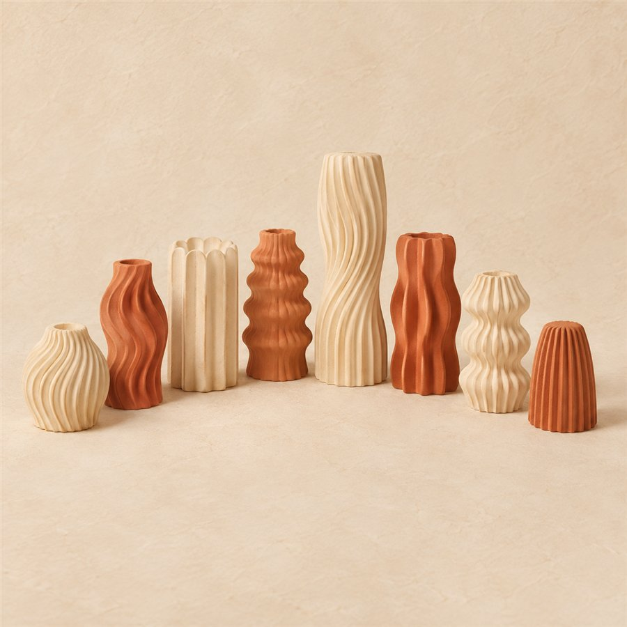
Experiencia interactiva
El sonido de los idiomas
Experiencia interactiva con audios de ocho idiomas.
Ambrosio · UAI · 2026
Taller de Diseño de Interfaces · Portafolio académico
Un recorrido por las exploraciones sonoras, los prototipos físicos y las experiencias digitales del semestre.
Unidad 1
Exploraciones audiovisuales, síntesis y relaciones entre imagen y sonido.

Experiencia interactiva
Experiencia interactiva con audios de ocho idiomas.
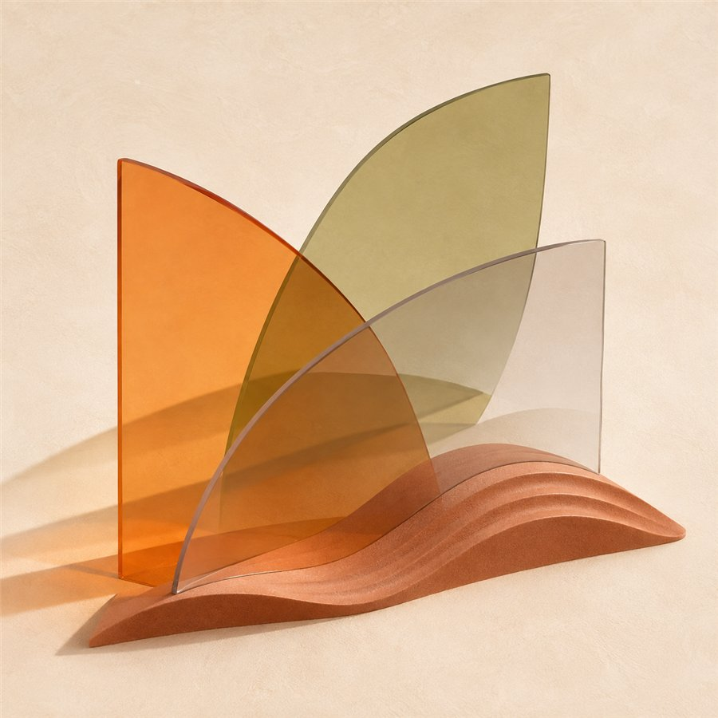
Experiencia interactiva
Transformación de los canales de color de una imagen en parámetros sonoros.
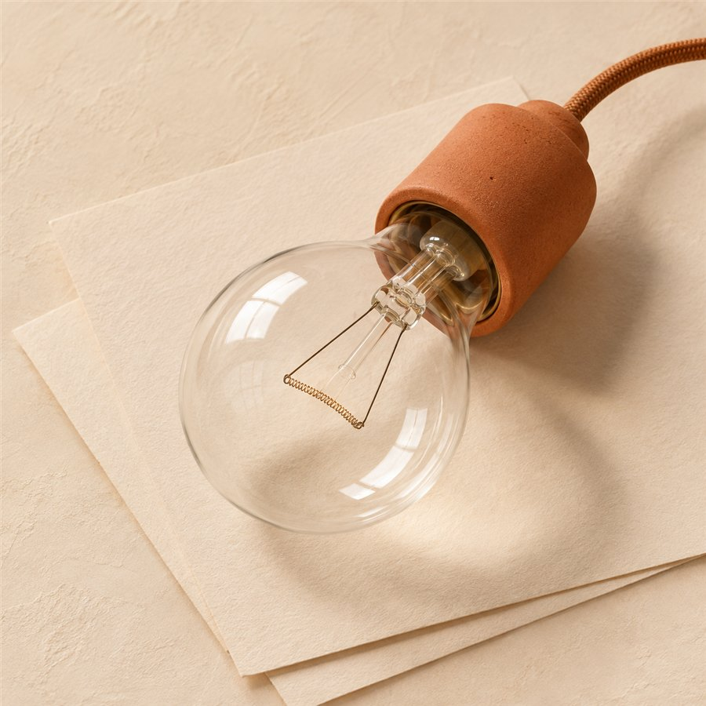
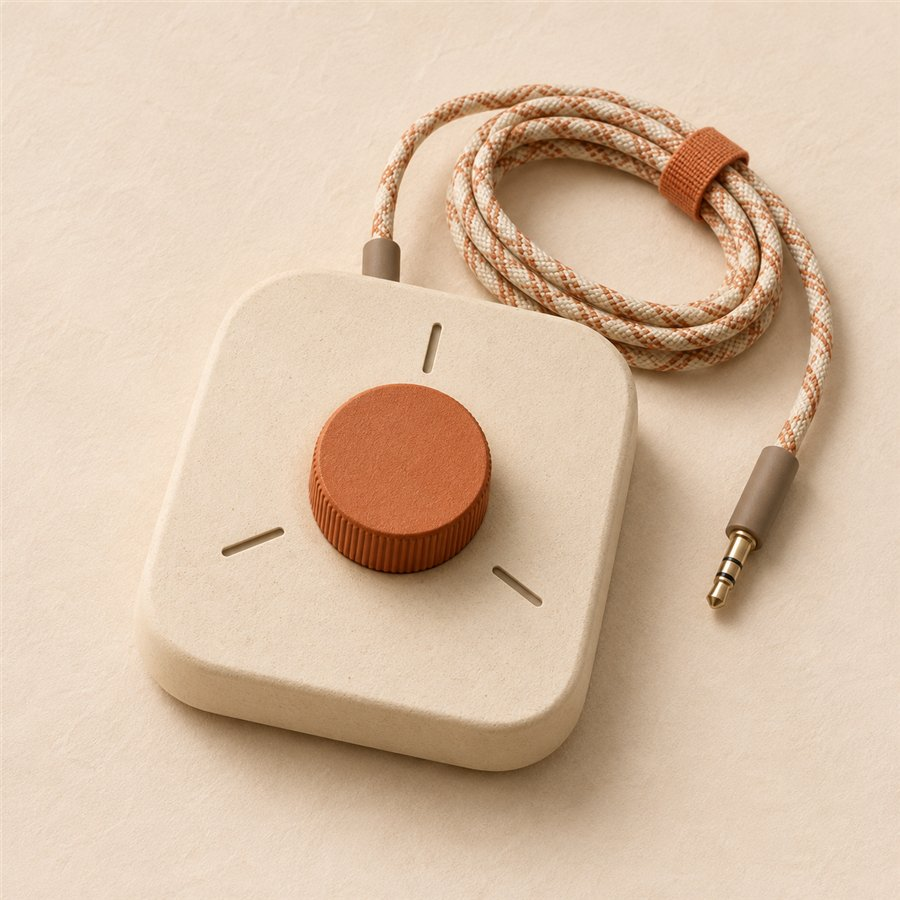
Registro audiovisual
Demostración audiovisual del ejercicio original.
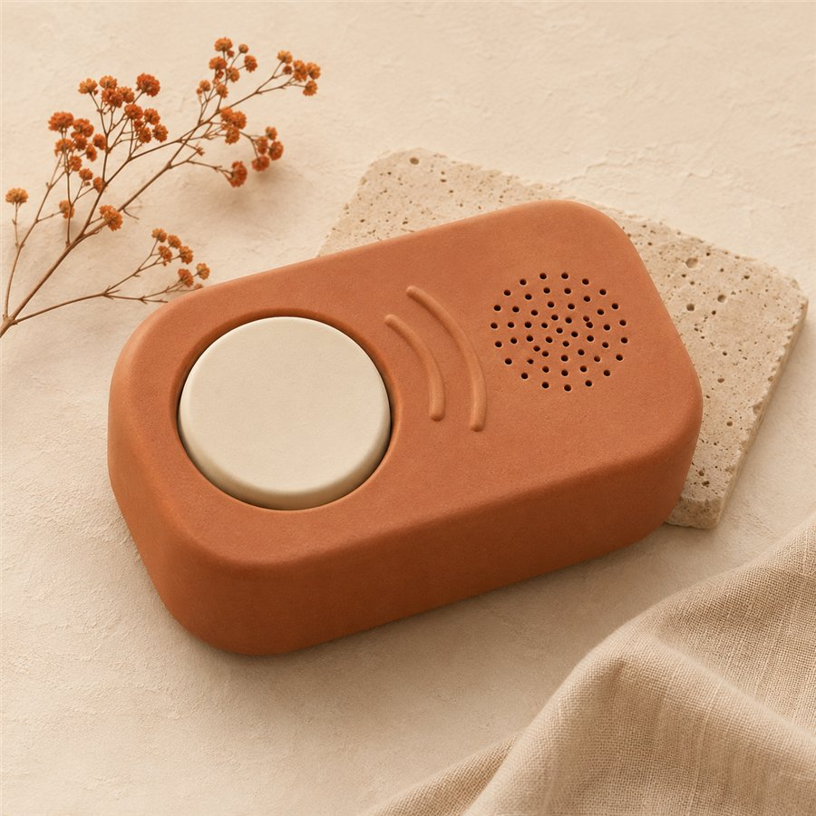
Experiencia interactiva
Interfaz sonora tangible con documentación y demostración.
Unidad 2
Prototipos que conectan objetos, electrónica y experiencias digitales.
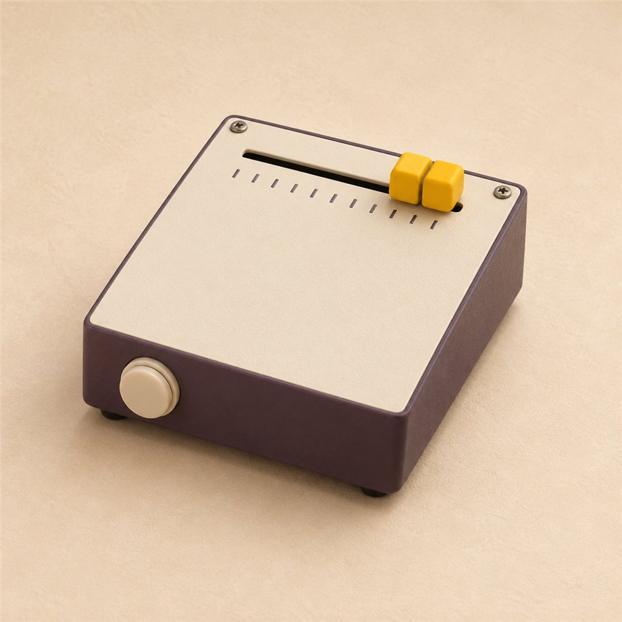
Experiencia interactiva
Controlador musical físico con Arduino, botón y potenciómetro deslizante.
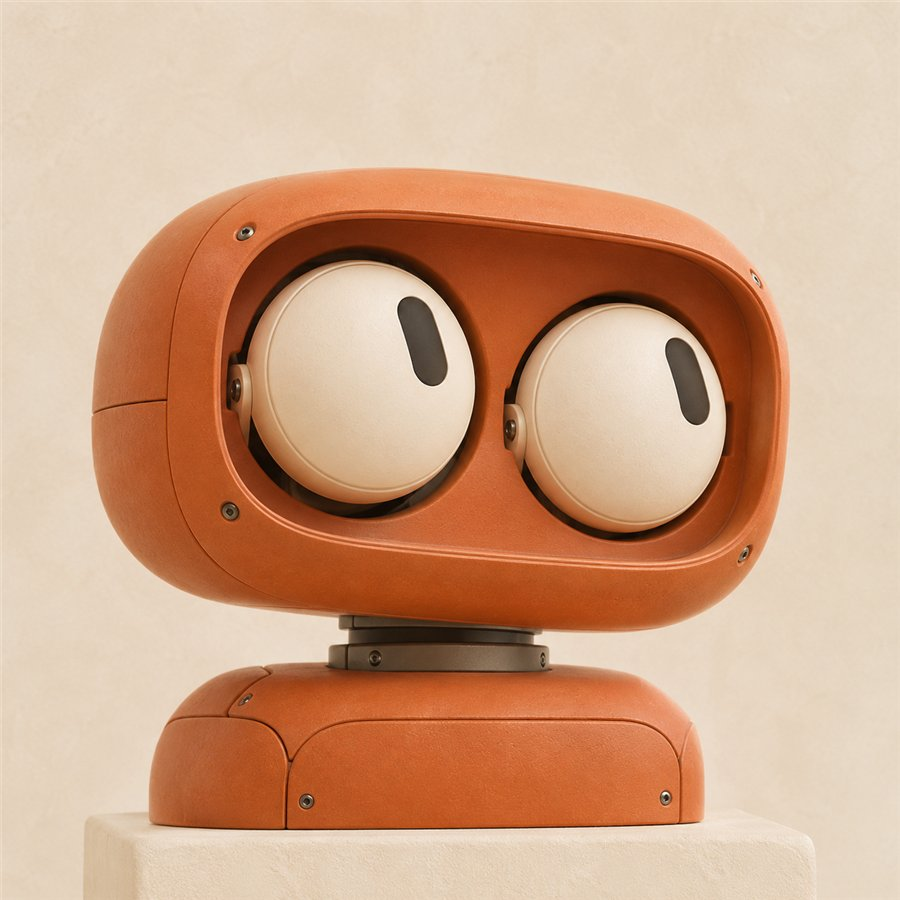
Experiencia interactiva
Interfaz robótica expresiva con ojos móviles, gestos y conversación.
Video de funcionamiento ↗Archivos del proyecto ↗Unidad 3
Visión computacional, realidad aumentada y entornos inmersivos.
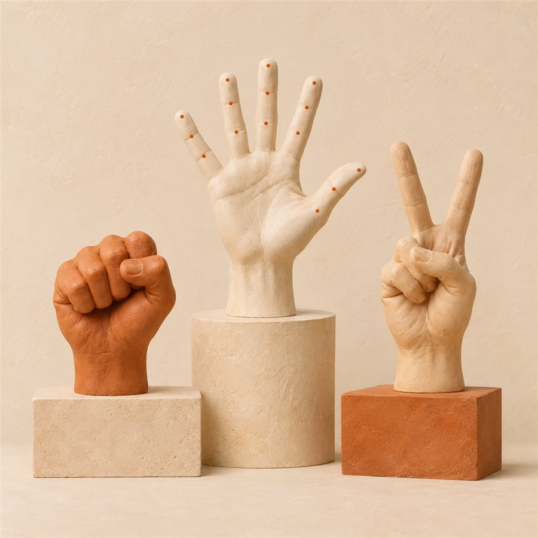
Experiencia interactiva
Juego de piedra, papel o tijera con reconocimiento de manos.
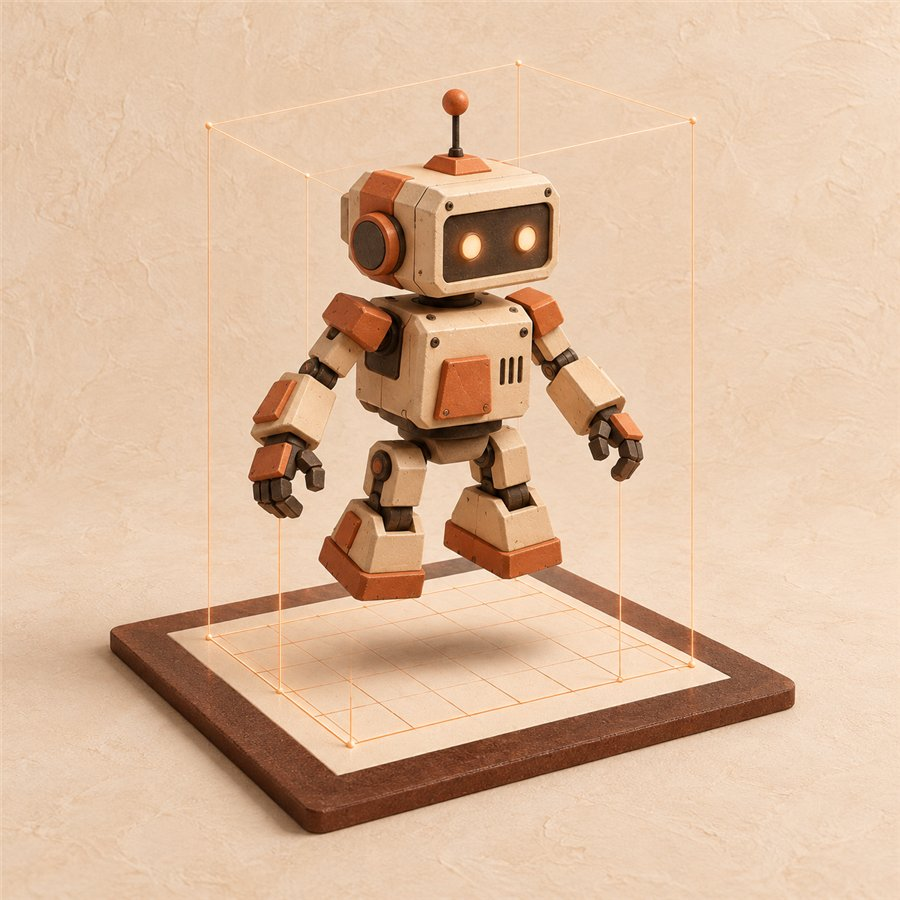
Experiencia interactiva
Robot animado sobre un marcador HIRO, con cámara activada por el usuario.
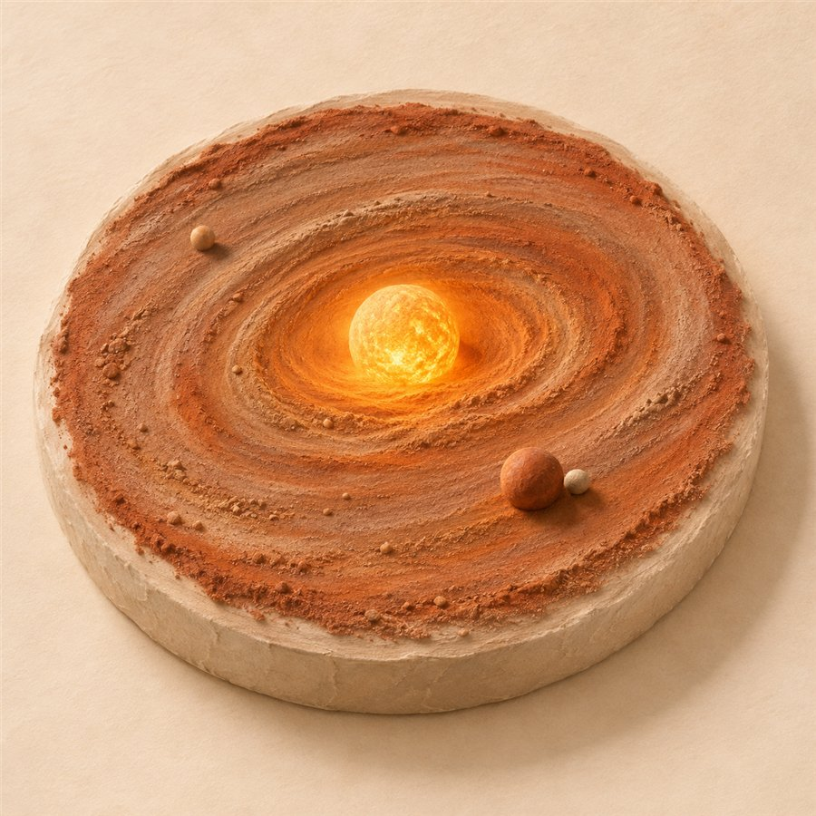
Experiencia interactiva
Recorrido inmersivo por la formación del Sol, los planetas, la Tierra y la Luna.
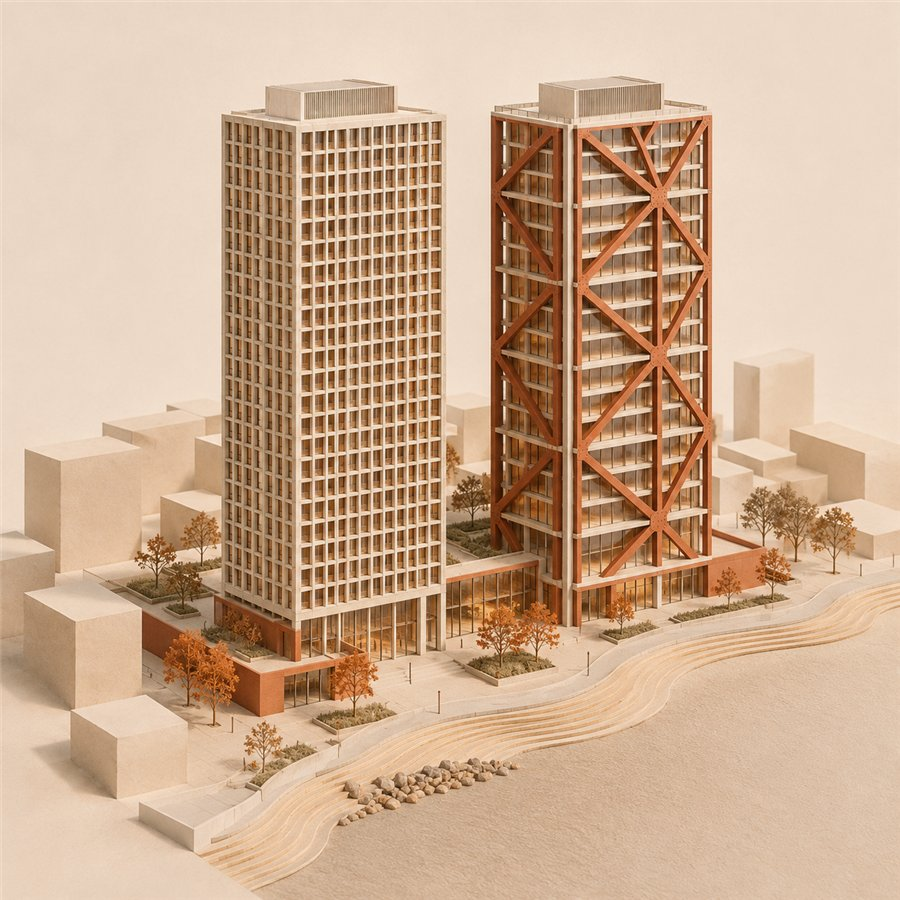
Experiencia interactiva
Ciudad costera interactiva y comparación educativa de sistemas de disipación sísmica.
Video de entrega · 60 segundos ↗Archivo complementario
Se conservan los originales. Los repositorios valdes e idiomass comparten la página de idiomas, pero valdes también contiene ejercicios de Max y p5.js. Las dos versiones de AV MUSIC comparten el mismo HTML. Los repositorios que solo contienen un README no se presentan como proyectos terminados.
Archivo de sonido y p5.js · Versión alternativa de AV MUSIC · Todos los repositorios